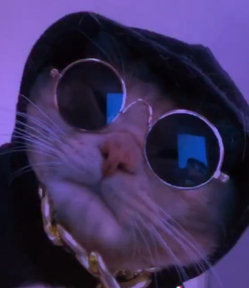

<ion-header >
  <ion-toolbar>
    <ion-button fill="clear" size="small" (click)="navigate('home')">
      <ion-icon name="arrow-undo-outline"></ion-icon>
    </ion-button>
    <ion-title class="header-tittle">Mis escaneos</ion-title>
  </ion-toolbar>
</ion-header>

<ion-content [fullscreen]="true" class="ion-padding-top ion-text-center">
  <ion-avatar>
    
    
  </ion-avatar>

  <ion-button class="photo-btn" (click)="takeImage()" size="small" shape="round">
    <ion-icon name="camera-outline"></ion-icon>
  </ion-button>

  <h2>{{user().name}}</h2>

  <ion-item>
    <ion-icon slot="start" name="person-outline"></ion-icon>
    <ion-label>{{user().name}}</ion-label>
  </ion-item>
  <ion-item>
    <ion-icon slot="start" name="mail-outline"></ion-icon>
    <ion-label>{{user().email}}</ion-label>
  </ion-item>
</ion-content>
